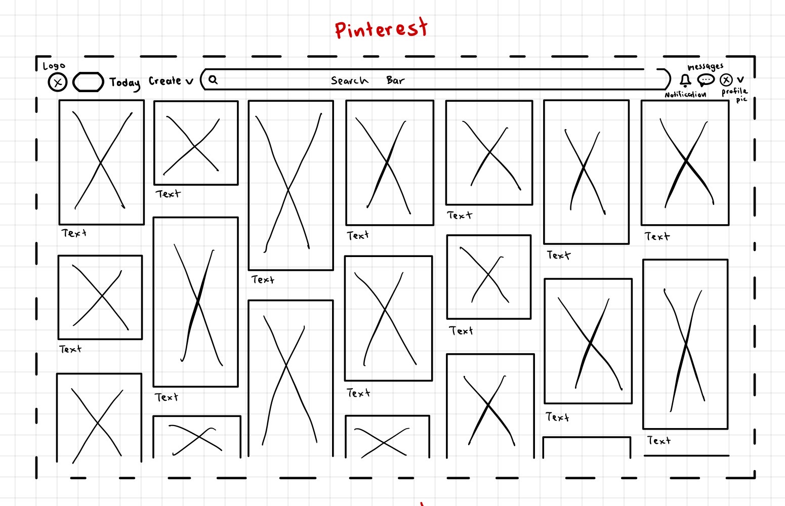
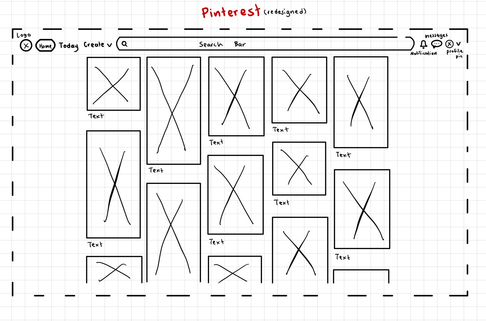

-
Using the favorite website you chose in homework 1, create a wireframe for one page of it using pen/paper, PowerPoint, or any your tool of choice. (use the 'img' tag!) Make sure to let us know what the name of your website is (Use the 'p' tag!)
PINTEREST
 -
Try to improve the website you've chosen, and create a redesigned wireframe of one page for the same website using the principles of visual hierarchy that you learned from the article.
PINTEREST REDESIGNED

-
What is the goal of the website? Who is it intended for? How does the design accomplish this? Write 2-3 sentences answering these questions. (Use the 'p' tag again!)
The purpose of Pinterest is to provide a space for people to share creative work and find inspirations of any medium. Such examples include fashion, digital artwork, paintings, cooking, baking, and graphic design. There's no limit(except for appropriateness). The home page of the website organizes photos of inspiration throughout the whole page, keeping the focus on items from the search Bar or images catered to the user's interests.
-
Write 2-3 sentences about what problems your redesign addressed, and how it solved them.
The problem I addressed in my redesign was the spacing of the photos on the main page of the website. While the website does a good job of keeping the focus on images for the user to look through, I personally found it a little overwhelming to see so many columns of photos take up the entire webpage, especially when there were a lot of photos on different things. Instead of having photos span across the entire page, my redesign has a larger margin to include more negative space and keep the content in the middle.
NOTE: Make sure to include the wireframe images in the website and don't just put it in your assets folder!
Your wireframes should look something like this: